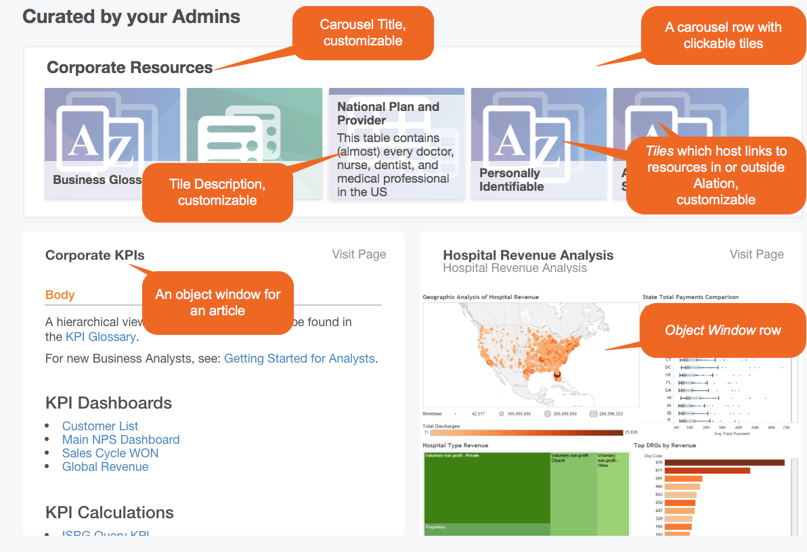
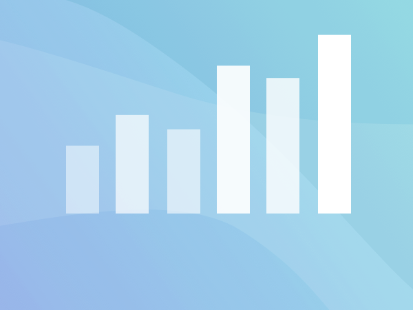

Customize Homepage JSON - V R4 to V R7¶
Applies to releases V R4 (5.8.x) - V R7 (5.12.x)
Homepage JSON Structure¶
The JSON you will send using the Homepage API should have the definitions of the elements you want to see on the Homepage and their properties.
JSON Structure¶
{
"action_links" : [
#this is the Promoted Actions section that appears on top and holds the links to actions
{
#this object is a tile
"title" : "value",
"img" : "path to image",
"navigateURL" : "URL"
},
],
"admin_sections" : [
#this is the Curated by Your Admins section that can include carousel rows and object windows
{
#this object is a carousel row that includes tiles
"type": "carousel",
"title" : "value",
"tiles" : [
#this array lists the tiles on this carousel
{
"title" : "value",
"img" : "path to image",
"navigateURL" : "URL",
"description" : "value",
"expandDescriptions" : true
}
]
},
{
#this object is an object window row that includes object windows
"type": "object_window_row",
"objects": [
#this array lists object windows in this object window row
{
"otype": "<otype value>",
"oid": <oid>
}
]
}
]
}
Important
Both the "admin_sections" and "article_links" objects must exist in the homepage.json, even if they are empty. It is not possible to completely hide main sections from the Home Page. If the section is empty in the customized JSON, Alation will display the default configuration for this section.
The bare minimum JSON would look like this:
{
"action_links" : [
],
"admin_sections" : [
]
}
Object |
Description |
|---|---|
action_links |
Includes the tiles in the Promoted Actions Banner |
admin_sections |
Includes objects of type carousel and object_window_row |
carousel |
A row of tiles |
object_window_row |
A row of object windows (elements that reference specific Alation objects) |
Examine the customization of each section and the properties of its elements, below.
{kind=link}
{kind=link}
{kind=link}
{kind=link}
{kind=link}
{kind=link}
Curated by Your Admins¶
Curated by Your Admins section is displayed under the Revisit section. Here you can customize:
The number of carousel rows - add/remove the carousel objects
The number and order of tiles in a carousel - add/remove the tile objects nested in a carousel object
The order of the rows or tiles - list the rows or tiles the way you want they should appear in UI
Titles of carousels - provide or change the title of the carousel object
Titles of the tiles - change the
titleproperty of the tile objectDescription of the tiles - optionally, add a description to the tile object
The target URLs of the tiles - provide the target URL for the tiles using the
navigateURLpropertyColor of the background images of the tiles - define a color from a range of supported colors
The number of object windows - add/remove object windows to object window rows
Content of object windows - provide the
otypeandoidvalues of the target object.
Sample Curated By Your Admins:
Curated By Your Admins JSON¶
In homepage.json, this section appears as the “admin_sections” object. Each row of this section is either a carousel or an object window row.
Object visibility is limited by permissions. If a user does not have permission to view the object, the corresponding object window will not be displayed on the page. Currently, the supported object types are:
article
bi_report
tableau_sheet
For Articles, a user can only view the fields that they have permission for. For example, if a custom field is not visible to the user, it will not show up; however, the rest of the article will be displayed.
Each row can have one or two object windows.
Structure¶
Sample JSON¶
{
"admin_sections": [
{
"type": "carousel",
"title" : "Here are Articles you might like",
"tiles" : [
{
"title" : "Getting started for data stewards",
"img" : "/static/img/homepage_images/colored_images/ArticleBlue.png",
"navigateURL" : "/article/19090/",
"description" : "MySQL",
"otype" : "bi_report",
"expandDescriptions" : true
},
{
"title" : "Getting Started for Query Writers",
"img" : "/static/img/homepage_images/colored_images/ArticleGreen.png",
"navigateURL" : "/article/68/",
"description" : "Some description is here #2",
"expandDescriptions" : true
},
{
"title" : "Getting started for Admins",
"img" : "/static/img/homepage_images/colored_images/ArticleOrange.png",
"navigateURL" : "/article/20147/",
"description" : "Test workbook"
}
]
}
]
}
Parameter |
Description |
Notes |
|---|---|---|
title |
Title of a carousel or a tile |
Use to customize the title |
img |
Path to the background image |
Use to change the background image or its color. See Customizing the Color of the Tiles. |
navigateURL |
URL of the target page the user is redirected to after clicking on the tile |
Change the target link.
Check if the tile URL is correctly formatted
URLs require a trailing backslash |
description |
Description shown on a sliding out background on top of the tile |
Provide the description |
expandDescriptions |
If True, will expand description upon hover-over on the tile. |
|
otype |
Type of Alation object |
Supported types are:
|
oid |
ID of object. When otype and oid are specified, Alation will populate the title and description for this object window from the object itself. |
You can find the oid in Alation URL for the object
page. For example, for an article with the URL:
|
title |
Optional property |
|
description |
Optional property |
Customizing the Color of the Tiles¶
Currently, tile image colors are generated randomly. If you want to define specific image colors for specific tiles, you will need to add the color to the img key value for the tile object. See the table below for the object type that matches the image, and what the corresponding URL is. Background color change is supported for the following object types:
article
custom_glossary (business glossaries)
attribute (columns)
data (data sources)
schema
table
tag
bi_report (BI reports)
Current supported colors are:
blue
orange
purple
teal
red
yellow
green
Object Type |
Image |
Path |
|---|---|---|
article |
|
|
custom_glossary |
|
|
attribute |
|
|
data |
|
|
query |
|
|
schema |
|
|
table |
|
|
tag |

|
|
bi_report |
 |
|
none |
|
{kind=link}
{kind=link}
{kind=link}
{kind=link}
{kind=link}
{kind=link}
{kind=link}
{kind=link}
{kind=link}